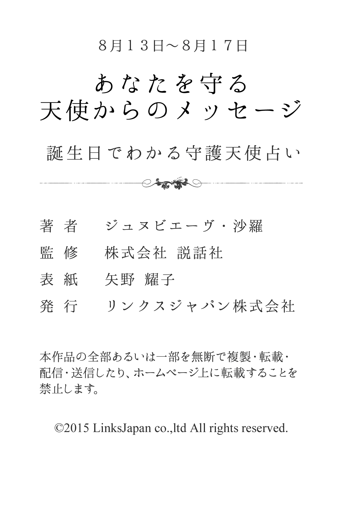

| ８月１３日～８月１７日生まれ あなたを守る天使からのメッセージ 誕生日でわかる守護天使占い (得トク文庫) | |
| ジュヌビエーヴ・沙羅 | |
| (2015) | |
1 、はじめに
「何かに、あるいは誰かに守られている......」
あなたは、そんなふうに感じたことはありませんか？
たとえば、限定発売のお菓子を購入しようと長い行列に並び、最後のたった１つを運良く購入できたり、学生の頃、授業で順々に答えなければいけなくなり、「あー、どうしよう！ 全然わかんないよ」と青ざめて固まっていると、先生があなたを指名しようとした瞬間、終了のベルが鳴り響いたり......
そんなほほえましいエピソードをもつ人もいれば、九死に一生を得るような重大事に遭遇して、心から「助かった！」と安堵のため息をもらした経験を持つ人もいるかもしれません。
そんなとき、あなたが何かに守られているような気がするのは、実は決して気のせいだけではないのです。なぜなら、それは守護天使のおかげだからです。
有名な神学者であり哲学者でもあるトマス・アクィナスは、『すべての人々に、クリスチャンであれ、それ以外の人であれ、たとえ大罪人であっても、あらゆるすべての人々に、決して離れることのない守護天使がついている』と記しています。
そう、守護天使とは、人が生まれてから死ぬまでの一生の間、その人と深く結びつき、保護し、そばにいてくれる天使のこと。あなたの心をより良い方向へと導くために霊感を送り込み、幸せな人生を送るための手助けをしてくれる神秘的な存在です。
さらに、それぞれの守護天使には、固有のキャラクターや得意な守護分野があります。したがって、あなただけを守ってくれる守護天使をよく知り、その言葉に耳を傾けることで、よりあなたらしく生きることができ、真実の幸せの形が見えてくることでしょう。
沙羅

2 、第１章 守護天使のささやき
★あなたの恋愛傾向
小天使メファシエルに見守られているあなたは、自信に満ちたエネルギッシュな人です。ありきたりの恋愛では満足できず、ドラマチックな大恋愛を繰り返し、人生をエンジョイしていくことでしょう。そんなあなたには少々強引なところがあり、好きになった人をあらゆる手段をつかって手に入れようとします。ただし、意中の人が自分のものになった途端、興味を失うために、相手を傷つけてしまうでしょう。恋愛をゲーム感覚で楽しむ人です。
★好きなタイプと嫌いなタイプ
あなたは少々、癖があっても、ユニークな人が好みのようです。いわば、個性的なタイプに惹かれるようです。常に驚かせてくれるような、刺激的な感性をもった人を求めています。半面、自分というものをもっておらず、依頼心の強い甘えた人は好みません。
★最も好むセクシャルな雰囲気
あなたは、いろいろ試したい人ですから、パートナーが一生懸命になっている姿を一番、セクシャルに感じるでしょう。また、さまざまなことにチャレンジしていくという好奇心を見せられると、たまらなく感じるようです。
★運命の出会いはどんな人？
あなたの運命の人は、明るく活動的で、ユーモアのセンスのある人でしょう。あまりものごとを細かく考えるようなタイプではなく、大らかに自由奔放に生きているような人といえます。世の中の常識にも左右されず、ちょっぴりへそ曲がりな個性的な人でしょう。
★運命の出会いが与える影響力
運命の出会いがあなたに与える影響力は、元来もっていた恋愛に対する願望に表れるでしょう。明るく楽しいおつき合いを展開しようと積極的に、そして、エネルギッシュにぶつかっていきます。恋愛においても人生においても悔いのないすてきな経験をしたいあなたですから、自分本位なおつき合いに陥ってしまうことがあるかもしれません。相手を好きであればあるほど、理想に走ってしまい、ドラマチックなものばかりを求めてしまう傾向があるでしょう。
★結婚後の変化
結婚後もあなたは、自分自身の価値観を何ら変えることはなく、仕事や友人とのつき合いも独身時代と同じように続けていくでしょう。家庭生活も夫婦で暮らしているというよりは、恋人どうしが同居していうような生活感があまりないものになるかもしれません。そんなあなたがガラリと変わるのは、子供ができたときです。家庭よりも、外での自分の時間を大切にする傾向の強かったあなたが、すべてを子供中心に考えるようになるでしょう。その変化には、きっとパートナーも驚きます。
★好きな恋のシチュエーション
あなたの好きな恋のシチュエーションは、好きになった相手を一生懸命に追いかけているときにあるでしょう。相手からアプローチをされるよりは、多少、困難があっても、その人を自分の力で振り向かせることが何よりも好きなのです。障害があればあるほど燃えやすく、幾多の壁をのり越えて相手の愛を勝ちとった瞬間こそが、最大の喜びでしょう。また、ありきたりではない二人の関係や状況に、本能のままにのめり込むといったシチュエーションも同様です。
★どんな人を選べばうまくいく？
あなたは、活動的で明るいパートナーを選ぶべきです。一緒に楽しさを追求していこうとする人となら、有意義な毎日を送れるでしょう。また、あなたのように自由奔放に生きるタイプのほうが、気楽につき合っていけるはずです。反対に、あなたのことしか考えられないようなパートナーは、重荷に感じてしまうでしょう。少しへそ曲がりだけれど、ユニークな人ぐらいが、刺激的でいいかもしれません。伝統的な形式にこだわらない人となら、あなたも窮屈な思いをすることなく、のびのびと過ごせそうです。
★イメージチェンジのアドバイス
あなたは、洗練された感じを演出してみるといいでしょう。もともと華やかな印象を与えるタイプなので、下品にならないことがポイントとなります。高級ブランドで全身を飾るより、小物でアクセントをつけてください。メイクも控えめにすると効果的です。
★あなたが恋に感じる幸せ
自由奔放でパワフルなあなたは、のびのびとエンジョイしているとき、幸せな気持ちになるでしょう。積極的にイベントを企画し、おもしろおかしく過ごすことで、喜びを感じるはずです。特に、相手と一緒のときなど、あなたの趣味を相手が理解しようと努力しているのがわかると、ますます幸福感が高まります。反対に、あなたが相手に合わせなければならないと、不満を抱くかもしれません。相手にチヤホヤされたほうが、うれしい気分になるタイプでしょう。
★求めているものは何？
恋人関係になったら、あなたは自分のペースに相手が合わせてくれることを求めます。相手があなたの趣味を理解して、自分自身も参加しようとしてくれれば、あなたはすっかりご機嫌になり、相手の愛情を感じるでしょう。どこまでもマイペースなあなたは、人に合わせることが苦手なのです。

3 、第２章 大天使の恋予言
★どうすれば幸福な恋を獲得できる？
あなたを守護していてくれる大天使エセディエルは、「神の正しさ」とも呼ばれ、あなたにおおらかさを与えてくれているはずです。また、あなたが恋愛において危機に陥ったときや、思い悩んだときは、そっとアドバイスを与えながら、守ってくれることでしょう。あなたが幸福な恋をつかみ取るには、地球儀や天球儀、風景画など、広い世界を暗示させるものを身近におくようにするといいでしょう。また、自ら描くことでも効果があります。心に余裕が生まれ、エセディエルの加護を得やすくなります。
★あなたのセックス傾向
あなたは、つき合い初めの頃は、特に快楽を追求したがる傾向がありますから、さまざまな形で相手を喜ばせようとするでしょう。自分の快楽を念頭におきながらも、決して自分本位にはならずに、二人で楽しめるセックスをするところがあなたの長所です。相手の満足があってこそ、充実感を得られるあなたですから、当然のことながらテクニックも上手でしょう。半面、セックスの機会は逃がしませんから、浮気の心配はあります。
★あなたが捨てるべき性のこだわり
あなたは、心の片隅で高級感あふれる場所でのセックスにこだわります。ですから、狭くみすぼらしい部屋などでは、盛り上がることができません。セクシーな下着やムードを盛り上げる寝具など、完璧にそろってなくても、チャレンジしてみたほうがいいでしょう。
★運命の出会いの瞬間
あなたにとっての運命の出会いは、さまざまなレジャーや趣味などの活動をしているときに訪れそうです。特にあなたが目立ったり活躍しているといった状況ではなく、自然な感じで楽しんでいるとき、初めて会った気がしないほど、フィーリングの合った人が現れるでしょう。
★あなたが与える愛の特徴
あなたは、相手に恋の楽しさや醍醐味といったものを与えられます。二人でいるときはハッピーでいられることを前提とし、デートには毎回、工夫を凝らしたり、おしゃべりやスキンシップにしても、積極的に楽しめる状況をつくってあげられるでしょう。そういった明るく楽しいおつき合いを展開させながらも、もちろんロマンチックな雰囲気やセックスに至るまで、相手を上手にリードしてあげ、十分過ぎるほどの満足感を与えてあげられるはずです。
★運命の出会いを無駄にしないために
あなたが運命の出会いを成就させるためには、できる限り他の異性との交友を慎むようにすべきでしょう。たとえ単なる遊びだとしても、結果的に相手に誤解を与えてしまってはとり返しのつかないことになりかねません。相手の他に何か楽しみを見つけるのではなく、あなたが求めるものごとを常に二人で一緒に楽しんでいけばいいのです。また、自分を主張していくことは悪くはありませんが、一歩、譲る謙虚さのほうが大切になります。相手の意見や気持ちを聞き入れ、受け入れていく気持ちがなければ、何の意味もない出会いになってしまうことを忘れないでください。
★あなたの魅力と弱点
あなたの魅力は、積極的に誰であっても常に明るく、楽しいおつき合いができることになります。いつでもハッピーでいられることをモットーに、おしゃべりやスキンシップなどで、とてもフレンドリーに接することができるでしょう。その状況によって雰囲気を作り出すことが非常に上手なあなたです。ただ、遊び上手な面が恋にも表れやすく、長くつき合い深く理解し合うといった真剣な関係を築けない弱点があります。複数の異性との交友が原因で、トラブルを引き起こしてしまうこともあるでしょう。
★あなたを助けてくれるのは？
あなたを助けてくれるのは、遊び仲間になります。あなたの悩みを笑い飛ばしてくれるような人が、相談相手としてふさわしいでしょう。気のおけない友人なら、あなたの欠点もよく心得ていて、率直に指摘しアドバイスしてくれるはずです。
★あなたが告白する場合のアドバイス
あなたが告白する場合、もって生まれた見ための良さを活かすといいでしょう。ファッションや場所を選んで、いつもとは違う状況で告白に挑めば、それだけでも強いインパクトを与えられるはずです。ただし、派手になり過ぎないことが重要になります。ある程度、相手の好みを考えてコーディネートし、行動しましょう。また、プライドの高さを感じさせるような発言や態度は厳禁です。楽しいおしゃべりが途絶えないよう心がけ、気さくな雰囲気をつくることが成功のポイントになります。
★あなたの恋の問題点
あなたは、これまでいくつもの恋を経験してきたことでしょうが、一途に思い、深くのめり込んでいくということが少なかったでしょう。特に、相手が慎重派だったりモテるようなタイプだったりすると、その人とは別な人をキープしておくということもあるようです。それがまた真剣なおつき合いをするつもりがないために、トラブルを引き起こしてしまうこともあったかもしれません。恋に素直になれず、どこかアマノジャクな姿勢をとってしまうことで、中途半端な恋愛を繰り返してしまいます。
★幸せな恋のために、あなたが変えたほうがいい点
あなたは、恋に関して安易な気持ちをもたないようにすることが求められます。少しばかり今のおつき合いがうまく進展しないからといって、他の人に気持ちを向けるのはいいことではありません。新しさや楽しい要素だけを追い求めるのは自重しましょう。

4 、第３章 大天使のご神託
★あなたが幸福な恋を見つけるために
あなたは、自分の存在感をアピールし過ぎないようにしましょう。「私が、私が」と自己主張ばかりしていると、あなたの本当の良さを理解してもらえそうにありません。一歩、譲る謙虚さを身につければ、恋のチャンスも広がるはずです。楽しいことが大好きなあなたは、レジャーや趣味などの活動を通して、いい人と出会えるはずですから、いろいろなイベントに積極的に参加するのがおすすめです。一緒に遊んでいる仲間の中に、フィーリングがぴったりの相手がいたら、アプローチしていきましょう。
★不倫関係をどう考える？
あなたは、不倫に対して興味をもっているようです。誰に対しても、ありのままの自分で接することができ、やさしく接することができるあなたは、モテるタイプでしょう。それに乗じて、既婚者である人にも平気でモーションをかけていくことがありますが、そういったときに限って自分のマイナス面を出してしまう傾向があります。そのために相手から敬遠され、不倫には至らないケースが多いでしょう。不倫願望を抱いているだけで、実際にはあまり縁がないようです。
★あなたが不倫関係にはまってしまう理由は？
あなたが不倫関係にはまってしまう理由は、相手の純粋で素直なところに強く惹かれるからでしょう。そもそも恋愛を遊び感覚で楽しむ傾向のあるあなたは、本命と交際していてものめり込むことができず、他に何人もの人をキープするところがあるようです。そんなあなたの目の前に、これまでつき合ったことのないピュアな人が出現するため、恋心が刺激され、そのまま純愛にのめり込むのでしょう。
★あなたに相手から惹かれる理由
あなたが相手に惹かれた本当の理由は、あなたのプライドの高さにあこがれを抱いたからでしょう。抜群の行動力をもち、時には傲慢と思われるほどの自信にあふれ、決して人に弱みを見せないあなたの強さに、相手はぐいぐいと惹き寄せられたようです。相手の周囲には、自分の力で道を切り開こうとする人が、あまりいなかったのかもしれません。相手の心の中には、足を引っ張ろうとする敵から、あなたを守ってあげなくてはならないという使命感が芽生えていそうです。
★あなたの悪い癖
あなたは、思いどおりの恋を手に入れたとしても、とことんまでのめり込むことができないタイプでしょう。特に、恋人が慎重派だったりモテるタイプの場合、他の人をキープとして残していくような場合もありそうです。その結果、トラブルを起こしてしまうこともあるでしょう。また、恋に対して真剣に、そして素直になれず、いたずらに恋の遍歴を繰り返し異性を惑わし翻弄するのは、あなたの悪い癖です。
★あなたは結婚後、浮気をする？
あなたは、浮気願望が強いタイプのようすが、実際に浮気に走る可能性は低いはずです。誰に対してもやさしく、屈託ない態度で自分を表現するので、異性からの人気は高いでしょう。そのため、機会さえあれば、いつ一線を越えても何の不思議もないところがあり、あなた自身が誘いを待っている場面が少なくないかもしれません。ただし、幸か不幸かその願望の強さが表面に表れてしまい、逆に敬遠される原因となって、浮気には至らないようです。
★あなたが結婚後に望むこと
あなたは結婚後、パートナーの考え方からどんどん刺激を受けながら、より良い方向に進みたいと希望するようになります。そのため、どんなささいなことでも、きちんと意見を求めてくるようになるでしょう。また、もともと仲間とワイワイ過ごすことが大好きですから、家族一緒に陽気に過ごしたいと思っているに違いありません。もともと辛気臭いのが苦手なので、心の底から楽しいと感じられるような、快適な家庭を築くことを望むでしょう。
★あなたは、どんな恋を求めている？
あなたは恋愛願望もとても強く、常に恋のときめきを感じていたいと思うタイプです。そして、自分にそんなワクワク感を与えてくれる相手を求めています。したがって、そんな恋のときめきを与えてられると、あなたの恋スイッチはすぐにオンとなるでしょう。ただし、情熱のレベルを上げていくには、ちょっと工夫が必要で、ワンパターンのアプローチをされるだけでは効果が出ません。デートコースに工夫を凝らしてもらうといった頭をつかう必要があります。また、あなたの一番の発情期は、秋から冬にかけてです。
★あなたの恋の終わりと始まり
あなたの恋が終わりを告げるとしたら、突然、相手への興味が失せ、恋心が感じられなくなってしまったときでしょう。特に、知り合ってからの期間が短くて急速に盛り上がった恋ほど、終わりが早いかもしれません。でも、次の恋は、すぐに訪れるでしょう。出会いはプライベートなシーンでの出会いが圧倒的に多いようです。アフターファイブに立ち寄ったお店で意気投合したり、友人と出かけたレジャー先でときめく相手が現れたりします。開放感も手伝って、あっという間に激しい恋に落ちるでしょう。
★あなたが夢見ている恋の形
あなたが夢見ているのは、楽しく変化に富む恋です。何となく相手が気になって、いつの間にか好きになるといった、ごく平凡でオーソドックスな恋ではなく、出会いの瞬間からお互いに強いインパクトを感じて惹かれ合ったり、毎回、趣向を凝らしたデートが楽しめたりするようなワクワク気分が続く恋を夢見ています。さらに、その人と恋をすることで、今まで知らなかった趣味に目覚めたり、新しいタイプの友人が増えたりするような新鮮な変化をもたらしてくれる恋なら、最高と思っているでしょう。

5 、第４章 大天使のアドバイス
★どうすれば幸福な恋を獲得できる？
あなたが仕事場で株を上げる方法は、周囲のやり方や考え方を柔軟に受け入れることが大事です。そうすることで、あなたの中の冷静さや、精神的な強さが養われていきます。その結果、複雑化した状況を素早くもとに戻し、常にリラックスしたムードをつくり出すことができるでしょう。また、何ごとにも見返りを期待してはいけません。同時に好き嫌い、可能や不可能をはっきりと意志表示していくことで、よりあなたのもつやさしさが際立ち、周囲から見直されるでしょう。
★あなたが能力を活かすためには？
あなたの能力を活かすためには、夢ばかり追わずに現実にできることから手をつけていくことが大切です。あなたは精神的なことを大切にし過ぎて、最初に何をするべきかの判断が鈍ってしまいがちでしょう。とりあえず、目の前の問題からとり組んでいけば仕事もはかどり、本来の力を発揮できます。また、自分より周囲のこと先に考える傾向がありますが、気をつかい過ぎると体調にも良くありません。ストレス解消を心がけることも重要です。
★あなたは仕事と家庭を両立できる？
あなたは、仕事と家庭をきちんと分けられ、要領良く両立できる人です。しかも、両方を充実させたいと思うタイプでしょう。そのためには多少、強引とも思えるくらいの行動力を発揮することがあります。もし、あなたが仕事のほうをメインに考える場合、そのときは家庭内に何か問題があっても、仕事に直接、影響を与えることはないはずです。また、仕事上の悩みがあるときも、パートナーにはそれを打ち明けず、家族の前では明るく振る舞うことでしょう。
★あなたにピッタリの職業
あなたにピッタリの職業は、楽しさを提供するものです。もともと自信家のあなたですから、メディアを通して自分を上手にアピールし、エンターテイナーとして活躍できるでしょう。さらに、プロデューサーとしての才能も兼ね備えていますから、レジャー関係のスタッフとしても能力を発揮できます。また、人の心をつかむのが得意なので、セールスやコンサルタントなど、話術を活かした仕事もおすすめです。華やかな商品を扱う分野にも向いているでしょう。

6 、エピローグ
ここで紹介しましたのは、９の大天使の元にそれぞれ８の小天使が存在するというヒエラルキーとグループ構造をもとに占う、ヨーロッパにおいては最も親しまれている「守護天使占い」です。
有名人やスポーツ選手に限らず、あなたの周囲にも、「持ってる」と感じられる人が、きっといるのではないでしょうか。その「持ってる」とは、秀でた才能だったり、華々しい個性だったりするケースもあれば、ここぞというときにパワーを発揮できる勝負強さや、チャンスをモノにする力だったり、皆の視線をひとりじめしてしまう磁力のような魅力や驚異的な実行力だったりするケースもあるでしょう。
いずれにせよ「持ってる」人は、何か不思議なパワーに守られているように見えるはずです。その不思議なパワーこそ、実は守護天使というパワーなのです。
そして、自分の守護天使を知り、守護天使に出会った今日からは、あなたも「持ってる」人の仲間入りを果たしたのです。守護天使の恩恵を、守護天使の慈愛を、あなたもめいっぱい感じて、「持ってる」人生を謳歌してください。
沙羅

7 、著者プロフィール
ジュヌビエーヴ・沙羅
8 月10 日北海道函館市生まれ。女性誌、書籍の編集を経て、占術家に転身。西洋占星術や四柱推命を初めとして、夢占い、タロット占い、紫微斗数占いと幅広く占術を研究。
●著作
「四柱推命恋愛運」（実業之日本社）
「幸運・不運が一目でわかる夢占い」（ナツメ社）
「幸せを呼ぶパワーストーン」（実業之日本社）
「愛とメタモル深層心理テスト」（実業之日本社）
「初めて作るパワーストーンアクセサリー」（ブティック社）
「とっておきの星占い」（ナツメ社）ほか、多数。
